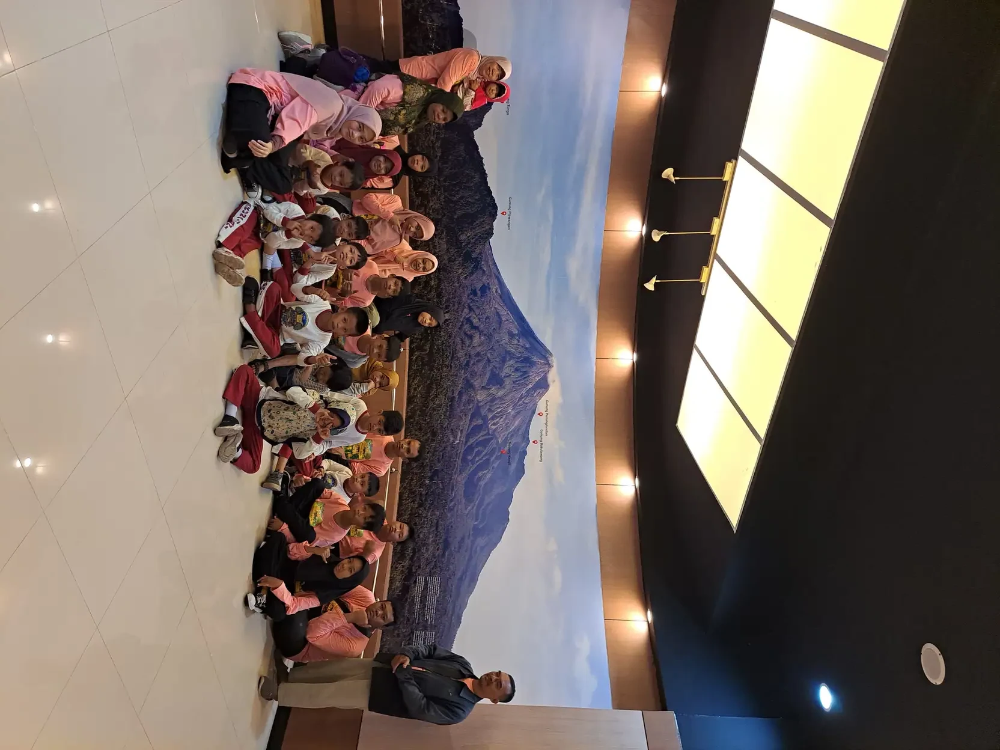

Frekuensi terapi wicara yang ideal tidak memiliki satu angka untuk semua anak. Jadwal ditentukan melalui asesmen, tujuan komunikasi, respons terhadap layanan, serta kondisi keluarga. Sesi yang lebih banyak tidak otomatis lebih baik. Gunakan panduan ini untuk membahas rencana dengan terapis, bukan menetapkan dosis sendiri.
Pertanyaan tentang jadwal sering muncul ketika orang tua sedang mengatur sekolah, pekerjaan, biaya, dan harapan terhadap perkembangan anak. Wajar bila keluarga ingin jawaban yang pasti. Namun, jadwal yang bermakna perlu menjawab kebutuhan nyata anak, bukan sekadar mengikuti paket layanan atau pengalaman keluarga lain. Berikut cara menimbangnya dengan lebih tenang dan terarah.
Daftar Isi
- Apa yang dimaksud frekuensi terapi wicara?
- Mengapa asesmen lebih penting daripada angka sesi?
- Mulai dari tujuan komunikasi yang bermakna
- Tabel pertimbangan saat membahas jadwal terapi
- Apa kata bukti tentang terapi yang lebih sering?
- Dukungan sehari-hari bukan mengambil alih terapi
- Akses, biaya, dan kapasitas keluarga perlu dihitung
- Selaraskan sesi dengan komunikasi di sekolah
- Kapan rencana dan frekuensi perlu dievaluasi?
- Persiapan konsultasi tanpa tuntutan hasil instan
- Pertanyaan tentang frekuensi terapi wicara
Apa yang dimaksud frekuensi terapi wicara?
Frekuensi berarti seberapa sering layanan terapi dijadwalkan dalam rentang waktu tertentu. Namun, pertanyaan tentang jadwal tidak dapat dipisahkan dari lama pertemuan, isi kegiatan, cara pemberian layanan, dan periode program. Dua anak dapat hadir dengan frekuensi yang sama tetapi menjalani pengalaman belajar yang berbeda. Karena itu, menghitung kedatangan saja belum menggambarkan kecocokan rencana.
Dalam panduan variasi layanan ASHA, penyesuaian dapat mencakup metode, tempat, kelompok, frekuensi, serta durasi sesi. Ini bukan berarti orang tua bebas meracik dosis sendiri. Kerangka tersebut membantu keluarga memahami bahwa layanan perlu mengikuti kebutuhan individu, bukan selalu mengikuti satu bentuk jadwal yang tidak pernah berubah.
Terapi yang diawasi tenaga profesional memiliki sasaran, strategi, pemantauan, dan pertimbangan klinis. Sementara itu, mengobrol saat berpakaian atau membaca buku bersama adalah dukungan komunikasi dalam kehidupan sehari-hari. Keduanya dapat saling melengkapi, tetapi tidak boleh dianggap sama hanya karena sama-sama melibatkan percakapan. Penjelasan dasar tersedia dalam artikel terapi wicara.
Saat menerima usulan jadwal, tanyakan pula apa yang akan dikerjakan dalam sesi dan mengapa. Istilah intensif dapat memiliki arti berbeda antarlayanan. Mintalah penjelasan tertulis yang mudah dipahami agar keluarga mengetahui hubungan antara frekuensi, tujuan, serta cara menilai manfaatnya bagi anak.
Mengapa asesmen lebih penting daripada angka sesi?
Anak yang membutuhkan bantuan memahami instruksi memiliki kebutuhan berbeda dari anak yang sedang belajar menghasilkan bunyi tertentu. Anak lain mungkin memerlukan dukungan untuk menyampaikan pilihan atau memperbaiki pesan ketika lawan bicara belum memahami. Label keluhan yang terdengar serupa tidak cukup untuk menentukan jadwal yang sama.
NIDCD menjelaskan bahwa evaluasi dapat melibatkan pembicaraan tentang perkembangan anak, pemeriksaan kemampuan komunikasi, dan pemeriksaan pendengaran. Hasil evaluasi menjadi dasar untuk mempertimbangkan kegiatan di rumah, terapi individual atau kelompok, maupun pemeriksaan lanjutan. Artikel ini tidak dapat menggantikan proses tersebut atau menyimpulkan diagnosis dari perilaku tertentu.
Siapkan informasi yang dekat dengan keseharian: kapan anak paling mudah menyampaikan kebutuhan, bahasa yang digunakan keluarga, situasi yang menantang, serta cara orang lain membantu. Ceritakan juga jadwal sekolah, perjalanan, tidur, dan kondisi kesehatan yang relevan. Informasi ini membantu tenaga profesional melihat anak di luar ruang layanan.
Usia memang bagian dari pertimbangan perkembangan, tetapi bukan satu-satunya penentu frekuensi. Jangan menetapkan dosis hanya dengan tabel usia di internet. Jika sedang mencari pendamping profesional, gunakan bacaan memahami peran terapis untuk keluhan keterlambatan bicara sebagai pengantar pertanyaan, bukan alat menegakkan diagnosis atau memilih program tanpa asesmen.
Mulai dari tujuan komunikasi yang bermakna
Sebelum bertanya berapa kali harus datang, tanyakan komunikasi apa yang paling penting bagi anak sekarang. Tujuan seperti mampu menyampaikan rasa tidak nyaman, meminta bantuan membuka tas, atau memilih kegiatan memberi arah yang lebih jelas daripada target umum agar anak cepat lancar bicara. Tujuan perlu disepakati bersama tenaga profesional dan keluarga.
Dalam contoh hipotetis, keluarga dapat membawa keluhan bahwa pesan anak belum dipahami ketika ingin berhenti bermain. Diskusi dapat berfokus pada cara anak menyampaikan selesai dengan bentuk komunikasi yang dapat diaksesnya. Contoh ini bukan target wajib, bukan kisah peserta YUKA, dan tidak menyiratkan bahwa keterampilan tersebut akan tercapai setelah jumlah sesi tertentu.
Bentuk komunikasi dapat melibatkan ucapan, gestur, gambar, atau dukungan lain sesuai asesmen. Jangan menahan akses komunikasi yang sudah membantu hanya untuk memaksa munculnya kata. Keluarga yang ingin memahami alat bantu dapat membaca pengantar dukungan komunikasi AAC, kemudian mendiskusikan kesesuaiannya dengan tenaga profesional yang menangani anak.
Indikator tujuan sebaiknya mencakup situasi, jenis bantuan, dan siapa lawan bicaranya. Misalnya, keluarga dapat mengamati apakah pesan dipahami oleh pengasuh yang berbeda, bukan hanya oleh terapis. Jadwal kemudian menjadi sarana untuk mendukung tujuan itu. Kehadiran bukan tujuan akhir, dan membandingkan jumlah kata antaranak bukan ukuran yang adil.

Tabel pertimbangan saat membahas jadwal terapi
Tabel berikut adalah alat bantu percakapan, bukan resep frekuensi. Gunakan untuk menyiapkan informasi dan pertanyaan sebelum membuat keputusan bersama terapis. Setiap situasi masih memerlukan penilaian individual. Jika beberapa situasi terjadi bersamaan, mintalah bantuan menentukan prioritas agar keluarga tidak harus menyelesaikan semuanya sekaligus.
| Situasi yang dibawa keluarga | Hal yang perlu ditelaah | Pertanyaan untuk terapis |
|---|---|---|
| Baru memulai layanan | Hasil asesmen, prioritas komunikasi, dan kebutuhan pemeriksaan lain | Apa alasan jadwal awal ini dan kapan kita menilainya kembali? |
| Keterampilan hanya tampak dalam sesi | Kesamaan strategi serta kesempatan memakai keterampilan di rumah dan sekolah | Apakah dukungan di lingkungan sehari-hari perlu diubah sebelum frekuensi ditambah? |
| Anak kelelahan atau sulit mengikuti kegiatan | Waktu layanan, perjalanan, durasi, lingkungan, dan respons terhadap pendekatan | Penyesuaian apa yang membuat sesi lebih dapat diakses anak? |
| Biaya atau transportasi membatasi kehadiran | Prioritas layanan dan pilihan dukungan yang layak serta tersedia | Adakah pengaturan atau rujukan yang sesuai dengan kemampuan keluarga? |
| Tujuan mulai digunakan dalam keseharian | Kemandirian, kestabilan keterampilan, kebutuhan baru, dan rencana tindak lanjut | Apa dasar mempertahankan atau menyesuaikan frekuensi saat evaluasi? |
Catat jawaban dengan bahasa sederhana. Rencana yang baik dapat menjelaskan sasaran yang sedang dikerjakan, peran keluarga, dan cara menghubungi layanan ketika muncul kendala. Jangan menyimpulkan bahwa satu baris tabel otomatis berarti jadwal harus lebih padat atau lebih jarang. Keputusan tetap bergantung pada gambaran lengkap anak.
Bila keluarga menerima beberapa jenis layanan, tanyakan siapa yang mengoordinasikan tujuan agar jadwal tidak saling menumpuk tanpa alasan. Bacaan tentang perbedaan terapi okupasi dan terapi wicara dapat membantu membedakan fokus layanan sebelum membahas kolaborasi. Tabel ini juga tidak menentukan kelayakan layanan atau menggantikan surat rujukan.
Apa kata bukti tentang terapi yang lebih sering?
Lebih banyak sesi tidak otomatis berarti hasil yang lebih baik untuk setiap kebutuhan. Tinjauan sistematis oleh Frizelle dan rekan tentang dosis intervensi bahasa pada anak dengan developmental language disorder menunjukkan bahwa penelitian dosis masih terbatas dan komponennya tidak selalu dapat dipisahkan dengan baik. Temuan tersebut tidak dapat diubah menjadi resep tunggal bagi semua anak.
Penelitian dapat mempelajari sasaran bahasa tertentu, metode tertentu, dan kelompok peserta tertentu. Hasil untuk satu pendekatan tidak otomatis berlaku bagi pengucapan, kelancaran bicara, atau kebutuhan komunikasi lain. Membaca angka dari penelitian tanpa memahami konteksnya dapat membuat keluarga mengira jadwal yang berbeda pasti keliru, padahal kebutuhannya belum tentu sama.
Abstrak tinjauan sistematis tersebut menekankan perlunya penelitian lanjutan sebelum rincian dosis dapat diterapkan dengan yakin. Karena itu, artikel ini sengaja tidak memberikan hitungan sesi mingguan sebagai anjuran umum. Tanyakan kepada terapis bukti dan pertimbangan apa yang relevan untuk sasaran anak, serta bagaimana responsnya akan dipantau.
Ini juga bukan alasan untuk mengabaikan rekomendasi individual yang sudah dijelaskan oleh tenaga profesional. Sebaliknya, pemahaman tentang keterbatasan bukti membuat diskusi lebih jujur: rencana memiliki alasan, tetapi tetap perlu dievaluasi. Waspadai promosi yang memastikan semua anak akan berbicara setelah paket tertentu atau memakai testimoni sebagai jaminan hasil.
Dukungan sehari-hari bukan mengambil alih terapi
Rumah tidak perlu diubah menjadi ruang latihan sepanjang hari. Orang tua dapat mendukung komunikasi dalam kegiatan yang memang sudah dilakukan, sambil mengikuti strategi yang disepakati dengan terapis. Tujuannya memberi kesempatan berinteraksi yang dapat dinikmati anak, bukan menguji setiap ucapan atau membuat semua aktivitas menjadi pekerjaan rumah.
Contoh dukungan umum ialah menanggapi minat anak saat melihat buku, memberi kesempatan menyampaikan pilihan, dan menambahkan bahasa yang sesuai pada kegiatan bersama. Terima bentuk pesan yang dapat dipahami, termasuk menunjuk atau menggunakan gambar bila itu bagian dari dukungan anak. Tidak perlu menahan kebutuhan dasar atau memaksa pengulangan kata sebagai syarat mendapat bantuan.
Mintalah terapis menunjukkan strategi secara langsung, lalu beri kesempatan pengasuh mencoba dan menerima umpan balik. Jika instruksinya sulit dilakukan, katakan dengan jujur. Program rumah yang tidak cocok perlu disesuaikan, bukan dijadikan alasan menyalahkan keluarga. Artikel pendekatan interaksi orang tua dan anak dapat menjadi bahan pertanyaan saat konsultasi.
Latihan khusus untuk gerakan mulut, pengucapan, atau fungsi menelan tidak boleh ditiru sembarangan dari video. Kegiatan yang tampak sederhana belum tentu sesuai kebutuhan anak. Bedakan dukungan komunikasi yang wajar dengan tindakan klinis yang membutuhkan penilaian dan pengawasan. Peran keluarga adalah mitra yang mengenal anak, bukan pengganti tenaga profesional.

Akses, biaya, dan kapasitas keluarga perlu dihitung
Jadwal yang secara klinis dipertimbangkan tetap perlu dibahas dalam kenyataan hidup keluarga. Perjalanan, jam kerja, tanggung jawab pengasuhan, biaya, serta kebutuhan istirahat memengaruhi apakah rencana dapat dijalankan. Menyampaikan keterbatasan bukan berarti menolak kebutuhan anak. Informasi tersebut justru penting untuk mencari dukungan yang lebih realistis.
Bicarakan biaya total dengan layanan, termasuk asesmen, sesi, perjalanan, dan kebijakan pembatalan. Jangan mengandalkan harga dari pengalaman orang lain karena struktur layanan dapat berbeda. Bacaan komponen biaya terapi bicara anak dapat membantu menyiapkan pertanyaan, tetapi rincian terkini harus dikonfirmasi langsung pada penyedia layanan.
Jika layanan jauh, tanyakan apakah tersedia konsultasi pengasuh, layanan jarak jauh, kunjungan rumah, atau rujukan yang lebih terjangkau. Pilihan tersebut tidak selalu tersedia atau sesuai untuk setiap anak. ASHA memasukkan variasi tempat dan bentuk layanan dalam kerangka penyesuaian pelayanan, bukan menyatakan satu bentuk selalu paling unggul.
Keluarga juga berhak menjelaskan ketika rencana membuat pengasuh kewalahan. Bahas pembagian peran yang masuk akal dan dukungan dari sekolah atau anggota keluarga lain. Artikel mengelola stres orang tua mengingatkan pentingnya ruang dukungan. Jumlah sesi yang mampu diakses bukan ukuran kasih sayang, kesungguhan, atau nilai seorang orang tua.
Selaraskan sesi dengan komunikasi di sekolah
Keterampilan yang tampak dalam ruang layanan belum tentu langsung digunakan di tempat lain. Suasana kelas, lawan bicara, kecepatan percakapan, dan dukungan yang tersedia dapat berbeda. Karena itu, laporan bahwa anak diam di sekolah tidak otomatis berarti frekuensi terapinya kurang. Perlu ditelaah bagaimana kesempatan komunikasinya disediakan.
Dengan persetujuan keluarga, guru dapat berbagi contoh situasi yang membutuhkan dukungan kepada terapis. Misalnya, bagaimana anak meminta bantuan saat tugas sulit atau menyampaikan pilihan saat kegiatan kelompok. Bagikan informasi secukupnya dan lindungi privasi anak. Tidak perlu menyebarkan diagnosis, rekaman, atau catatan pribadi ke grup yang tidak berkepentingan.
Guru dapat meminta penjelasan tentang cara memberi kesempatan merespons, bentuk pesan yang diterima, dan bantuan yang sebaiknya digunakan. Kesepakatan sederhana lebih berguna daripada banyak instruksi yang saling bertentangan. Pembahasan peran orang tua dalam pendidikan inklusi dapat membantu membuka percakapan antara keluarga dan sekolah.
Kunjungan museum dan kegiatan kelompok dalam foto artikel ini hanya menggambarkan dokumentasi kegiatan YUKA. Foto tidak membuktikan peserta menerima terapi, memiliki diagnosis tertentu, atau mengalami perubahan kemampuan komunikasi. Pendidikan dan aktivitas sosial dapat menyediakan konteks interaksi, tetapi tidak boleh diklaim sebagai pengganti layanan klinis. Lihat gambaran kegiatan melalui galeri YUKA.

Kapan rencana dan frekuensi perlu dievaluasi?
Sepakati cara evaluasi sejak awal, termasuk tujuan yang diamati dan informasi apa yang perlu dibawa keluarga. Tidak semua evaluasi harus menunggu paket sesi habis. Jika anak mengalami perubahan kesehatan, kehilangan kemampuan yang sebelumnya sudah dimiliki, atau kesulitan mengikuti layanan, hubungi tenaga kesehatan yang menangani agar langkah selanjutnya dapat dinilai.
Catatan rumah dapat singkat: situasinya apa, pesan yang ingin disampaikan, bantuan yang diberikan, dan apakah lawan bicara memahami. Pilih contoh yang wajar, tidak perlu merekam semua kegiatan anak. Jika ingin menggunakan rekaman untuk konsultasi, tanyakan kebutuhan dan cara mengirimnya secara aman. Rekaman bukan bahan promosi tanpa persetujuan yang layak.
Ketika kemajuan belum terlihat, terapis perlu menelaah berbagai kemungkinan, bukan langsung menyalahkan motivasi anak atau keluarga. Sasaran, metode, kesempatan belajar, alat bantu, pendengaran, serta konteks keseharian mungkin perlu ditinjau sesuai kebutuhan. Penambahan sesi dapat menjadi salah satu bahan pembahasan, tetapi bukan satu-satunya pilihan dan tidak otomatis menyelesaikan setiap kendala.
Demikian pula, munculnya keterampilan baru tidak otomatis berarti layanan harus dihentikan. Bahas kestabilannya dalam keseharian, bantuan yang masih diperlukan, dan rencana pemantauan. Keluarga boleh meminta penjelasan tambahan atau pendapat profesional lain bila keputusan belum jelas. Jadwal seharusnya dapat dijelaskan dan diperbarui dengan alasan yang berkaitan dengan kebutuhan anak.
Persiapan konsultasi tanpa tuntutan hasil instan
Sebelum konsultasi berikutnya, tulis prioritas keluarga dengan bahasa sehari-hari. Anda tidak harus mengetahui istilah klinis. Penjelasan seperti anak kesulitan meminta bantuan ketika bermain sudah menjadi awal percakapan yang berguna. Tambahkan apa yang sudah membantu dan apa yang sulit dilakukan, sehingga rencana tidak hanya berpusat pada kekurangan.
Gunakan pertanyaan berikut sebagai pegangan: apa sasaran terdekat, mengapa bentuk layanan ini dipilih, apa peran pengasuh, dan bagaimana keputusan frekuensi akan dievaluasi. Tanyakan juga siapa yang dapat dihubungi ketika jadwal tidak dapat diikuti. Jangan ragu meminta contoh yang dapat dipraktikkan agar arahan tidak berhenti sebagai istilah teknis.
Untuk mengenali konteks lembaga, Anda dapat membaca tentang YUKA dan informasi program YUKA. Ketersediaan pendampingan, tenaga profesional, biaya, dan jadwal perlu dikonfirmasi melalui kontak YUKA. Artikel ini tidak menyatakan adanya slot layanan tertentu dan tidak menawarkan diagnosis melalui percakapan umum.
Frekuensi terapi wicara yang ideal adalah rencana individual yang punya alasan, dapat dijalankan, dan dinilai kembali berdasarkan tujuan bermakna. Keluarga tidak perlu mengejar angka yang paling besar. Dukungan terbaik dimulai dari memahami kebutuhan anak, menjaga akses komunikasinya, dan bekerja sama dengan tenaga profesional tanpa janji hasil yang tidak dapat dipastikan.

Pertanyaan tentang frekuensi terapi wicara
Berapa kali seminggu terapi wicara yang ideal untuk anak?
Tidak ada jumlah sesi mingguan yang ideal untuk semua anak. Terapis menentukan rencana berdasarkan asesmen, sasaran komunikasi, pendekatan yang dipakai, respons anak, dan situasi keluarga. Minta alasan pemilihan jadwal serta waktu evaluasinya, bukan sekadar meniru frekuensi anak lain.
Apakah terapi wicara lebih sering pasti lebih baik?
Tidak selalu. Jumlah pertemuan perlu dilihat bersama isi sesi, kesempatan belajar yang relevan, kenyamanan anak, dan penggunaan keterampilan dalam keseharian. Penambahan frekuensi merupakan keputusan individual yang perlu dievaluasi, bukan jaminan anak lebih cepat berbicara.
Apakah dukungan komunikasi di rumah bisa menggantikan terapi?
Interaksi sehari-hari dapat mendukung komunikasi, tetapi tidak otomatis menggantikan asesmen atau terapi profesional yang diperlukan. Orang tua dapat meminta contoh strategi yang aman dan sesuai target dari terapis. Mereka tidak harus mengambil alih peran klinis atau melakukan latihan khusus tanpa arahan.
Bagaimana jika biaya dan perjalanan membatasi jadwal terapi?
Sampaikan kendala tersebut secara terbuka agar terapis dapat membahas prioritas, penyesuaian jadwal, pelatihan pengasuh, atau bentuk layanan lain yang sesuai. Ketersediaan layanan dan kecocokannya tetap perlu diperiksa. Keterbatasan akses bukan kesalahan orang tua dan tidak menentukan besarnya kepedulian keluarga.
Kapan frekuensi terapi wicara perlu ditinjau ulang?
Tinjau sesuai kesepakatan evaluasi atau lebih awal ketika anak mengalami perubahan kemampuan, kelelahan, kesulitan mengikuti sesi, atau hambatan akses. Bawa contoh komunikasi dari rumah dan sekolah. Jangan menambah, mengurangi, atau menghentikan sesi hanya berdasarkan perbandingan dengan pengalaman keluarga lain.
Apakah kemajuan hanya dihitung dari banyaknya kata baru?
Tidak. Kemajuan dapat berupa lebih mudah meminta bantuan, menolak dengan dipahami, memahami pesan, bergiliran, atau menggunakan gambar dan gestur secara lebih mandiri. Indikator dipilih bersama terapis sesuai kebutuhan anak. Kemampuan yang muncul dalam kehidupan nyata lebih bermakna daripada hafalan kata tanpa konteks.
Apakah anak harus menunggu jadwal kosong sebelum diperiksa?
Jika ada kekhawatiran perkembangan komunikasi atau pendengaran, mintalah arahan tenaga kesehatan tanpa menunggu paket terapi tersedia. Pemeriksaan membantu menentukan kebutuhan dan langkah selanjutnya. Kehilangan kemampuan yang sebelumnya sudah dimiliki perlu segera disampaikan kepada tenaga kesehatan, bukan hanya diatasi dengan menambah sesi.
Bacaan Terkait
Sumber dan Referensi
- ASHA: Varied Service Delivery, penyesuaian bentuk dan dosis layanan
- NIDCD: Speech and Language Developmental Milestones, evaluasi komunikasi dan pendengaran
- Frizelle dan rekan (2021): tinjauan sistematis dosis intervensi bahasa pada DLD
- Kementerian Kesehatan: proses asesmen dan rencana terapi individual
Catatan: Artikel ini bersifat edukasi umum dan bukan pengganti konsultasi dengan psikolog, tenaga kesehatan, atau petugas layanan sosial resmi. Sumber dibaca pada 15 Oktober 2026. Jadwal individual harus ditentukan bersama tenaga profesional; artikel ini tidak memberikan jumlah sesi universal.